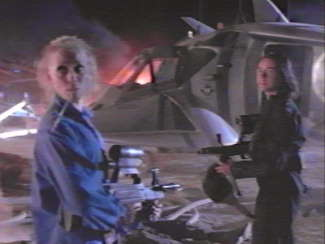

Movie review by : SFAM
Year : 1995
Directed by : Rachel Talalay
Written by : Alan Martin & Jamie Hewlett (comic strip), Tedi Sarafian (script)
Degree of Cyberpunk visuals : Low
Correlation to Cyberpunk themes : Low
Rating : 6/10
Key cast members :
"Look, if you want to torture me, spank me, lick me, do it. But if this poetry shit continues just shoot me now please."
Overview: If you're looking for an off-beat, low-budget cyberpunk comedy, Tank Girl is your movie. Talk about a weird flick! Lori Petty finds her calling here as an anti-heroine called Tank Girl, a light spirited soul living in a dystopic near-future caused by a comet hitting the earth. The evil water and power company, lead by Kesslee (Malcolm McDowell) has gathered up all the remaining water sources on earth (it hasn't rained in 11 years) and is hoarding water (now the most valuable commodity on earth) in order to maintain power over the rest of the surviving stragglers. Tank Girl, while riding around in a tank, leads the resistance made up of some of the most bizarre misfits against the evil water and power company. With Jet Girl (Naomi Watts) in tow, there is nothing they can't do, but first they want to have some non-sequitur fun!

"This comet came crashing into the earth. BAM! Total devastation. No celebrities, no cable TV, *no water*! It hasn't rained in 11 years. Now, 20 people gotta squeeze into the same bathtub. So it ain't all bad."
The Bottom Line: Truly, this movie is just strange. We get everything from bizarre, over-the-top scenes, to dances, to massive killing, all wrapped in truly odd dialogue. Tank Girl and Jet Girl make a terrific combination, but this movie is just not meant to be taken seriously. NOBODY takes the plot seriously - the entire cast knows how wierd this looks and continually seem to provide meta-comments to that effect. While this movie does drag in places, the cast is truly seems to be enjoying themselves, and in the process, they make Tank Girl enjoyable. I must confess - I've never seen the comic strip that Tank Girl is based off, but I can't imagine it's as zany as the the movie is. Again, this isn't a great movie by any stretch, but it is pretty fun.